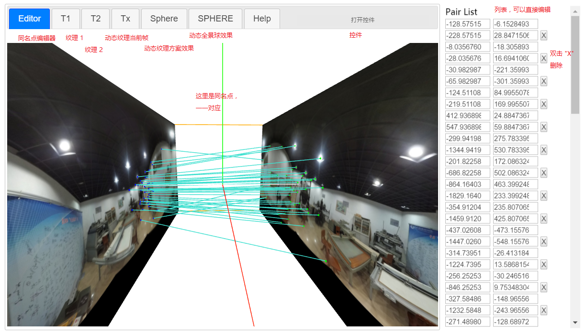

texture-morpher
a tool to make morphable texture
主界面 // Main window

查看 Demo：
- 先在【Editor】栏，点击【打开控件】，然后【加载示例 Pairs】
- 到【Sphere】栏，点击【打开控件】，然后【过渡】，效果不好；
- 再到【Editor】栏，点击【打控件】，然后【三角化】；
- 到【Sphere】栏，点击【打开控件】，最后【过渡】，效果好多了。
编辑器地使用 // Usage of Editor
- 在纹理上鼠标右键添加同名点；
- 新添加地同名点为激活状态，可以通过【方向键】 (蓝色点) 或【Control + 方向键】 (绿色点) 移动位置；
- 在右侧地 Pair List（同名点列表）也可以对位置进行微调；
- 可以通过 Pair List 上的【X】按钮删除一对同名点；
- 通过数字键【3】、【4】保存位置，然后通过数字键【1】、【2】加载位置，这样可以使得在前后两张图之间切换起来更容易；
纹理 1 & 纹理 2 // T1 & T2
动态全景图 // Sphere
TODO
动态全景球 // SPHERE
TODO
Inspiration:
Notes: